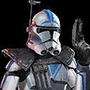

CT-5555 "Fives"
Tank with high Defense, enemy Speed reduction, and team-wide stat bonuses
Tank with high Defense, enemy Speed reduction, and team-wide stat bonuses

Deal Physical damage to target enemy and inflict Speed Down for 2 turns. If the enemy was already inflicted with Speed Down, attack again.
Deal Physical damage to target enemy and call target ally to assist. If the assisting ally is a Clone Trooper or 501st, both attackers deal 35% more damage. At the end of his turn if no allies are Taunting, Fives Taunts for 2 turns.
Clone Trooper allies have +50% Defense, and other allies gain half that amount. 501st allies gain Protection Over Time (5%) for 2 turns whenever they are critically hit.
Fives has +85% counter chance. Fives gains 15% Turn Meter whenever another Clone Trooper or 501st ally
takes damage and half that amount for other allies.
If CT-21-0408 "Echo" is present, Fives has +100% Defense when Taunting, or deals 100% more damage when
not Taunting.
Fives can't be revived. When another 501st Clone Trooper ally would be defeated while Fives is active,
they recover 100% Health and Fives is defeated at the end of that turn.
If Fives is defeated this way, 501st Clone Trooper allies gain his Max Health, Max Protection, Speed,
and Offense stats in addition to their own until the end of battle.